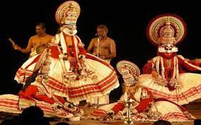

History of Kerala
Kerala, southwestern coastal state of India. It is a small state, constituting only about 1 percent of the total area of the country. Kerala stretches for about 360 miles (580 km) along the Malabar Coast, varying in width from roughly 20 to 75 miles (30 to 120 km).
It is bordered by the states of Karnataka (formerly Mysore) to the north and Tamil Nadu to the east and by the Arabian Sea to the south and west; it also surrounds Mahe, a segment of the state of Puducherry, on the northwestern coast. The capital is Thiruvananthapuram (Trivandrum).
Although isolated from the Indian interior by the mountainous belt of the Western Ghats, Kerala has been exposed to many foreign influences via its long coastline; consequently, the state has developed a unique culture within the subcontinent, not only with a diverse religious tradition but also with its own language, Malayalam.
Mr. Rahul Gandhi
Chief Minister Of Kerala
CULTURES
The cultural heritage of Kerala reflects extensive interaction with diverse communities from antiquity to the present. With an array of ancient Hindu temples with copper-clad roofs, later mosques with “Malabar gables” (triangular projections at the rooftops), and Baroque churches from the Portuguese colonial era, the state’s architecture offers a chronicle of the social, spiritual, and political history of the area.

Other characteristically Keralan art forms include intricate paintings on wood, thematic murals, and a remarkable variety of indoor and outdoor lamps (from which the state has earned the sobriquet “Land of Lamps”).
Literature and learning, in both Tamil and Sanskrit, have flourished since the 2nd century CE; meanwhile, the Malayalam language, though an offshoot of Tamil, has absorbed much from Sanskrit and also has a prolific literature.

Malanad - malabar Cruise
The alluring cruise makes kerala tourism into nect level.
FAMOUS PLACES:
Alleppey

Wayanad

Cochin

Munnar

Kumarakom:

Kovalam

Thekkady

FESTIVLAS
Kerala is most popularly known for its festival of Onam, but it also has other major festivals that we all ought to know about
- Onam
Onam! The national festival of Kerala celebrated for the coming of the King Mahabali.
- Vishu
There is not much to be said about Vishu but it is the Second most important festival of Kerala as it marks the New year which normally falls on the 14th, 15th, or 16th of April.
- Thrissur Pooram
This festival is one of the most famous Temple festivals of Kerala. It is celebrated in Vadakkunnathan Temple in Thrissur.
- Thiruvathira
This festival is mostly celebrated in the month of either December or January. This festival is in total dedication to Lord Shiva and it is believed that this day is perfect and very auspicious to worship Lord Shiva.
- Theyyam Festival
This festival is almost 800 years old and has people coming from all over India to perform their dances while dressed up as Deities.
- Attukal Pongala
This is celebrated on the ninth day of the ten long days of the actual festival in the month of February- March, only women are allowed to participate in this festival.